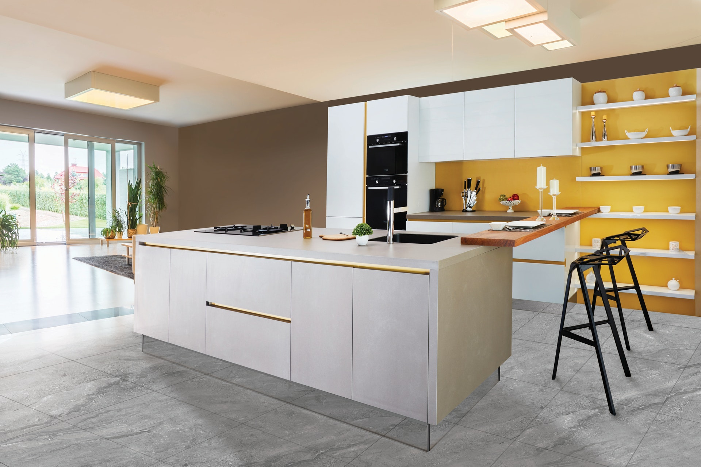

Colors
Lecture 18
Uses of color in data visualization
- Distinguish categories (qualitative)

Uses of color in data visualization
- Distinguish categories (qualitative)
- Represent numeric values (sequential)
Uses of color in data visualization
- Distinguish categories (qualitative)
- Represent numeric values (sequential)
- Represent numeric values (diverging)

Uses of color in data visualization
- Distinguish categories (qualitative)
- Represent numeric values (sequential)
- Represent numeric values (diverging)
- Highlight

Uses of color in data visualization
- Distinguish categories (qualitative)
- Represent numeric values (sequential)
- Represent numeric values (diverging)
- Highlight
Okabe-Ito RGB codes

| Name | Hex code | R, G, B (0-255) |
|---|---|---|
| orange | #E69F00 | 230, 159, 0 |
| sky blue | #56B4E9 | 86, 180, 233 |
| bluish green | #009E73 | 0, 158, 115 |
| yellow | #F0E442 | 240, 228, 66 |
| blue | #0072B2 | 0, 114, 178 |
| vermilion | #D55E00 | 213, 94, 0 |
| reddish purple | #CC79A7 | 204, 121, 167 |
| black | #000000 | 0, 0, 0 |
1. Avoid high chroma
High chroma: Toys

Low chroma: “Elegance”

2. Be aware of color-vision deficiency
5%–8% of men are color blind!

Red-green color-vision deficiency is the most common
2. Be aware of color-vision deficiency
5%–8% of men are color blind!

Blue-green color-vision deficiency is rare but does occur
2. Be aware of color-vision deficiency
Choose colors that can be distinguished with CVD

Consider using the Okabe-Ito scale
| Name | Hex code | R, G, B (0-255) |
|---|---|---|
| orange | #E69F00 | 230, 159, 0 |
| sky blue | #56B4E9 | 86, 180, 233 |
| bluish green | #009E73 | 0, 158, 115 |
| yellow | #F0E442 | 240, 228, 66 |
| blue | #0072B2 | 0, 114, 178 |
| vermilion | #D55E00 | 213, 94, 0 |
| reddish purple | #CC79A7 | 204, 121, 167 |
| black | #000000 | 0, 0, 0 |
CVD is worse for thin lines and tiny dots
When in doubt, run CVD simulations

Further reading
- Fundamentals of Data Visualization: Chapter 19: Common pitfalls of color use
- Wikipedia: HSL and HSV
- colorspace package documentation: Color Spaces
- colorspace package documentation: Apps for Choosing Colors and Palettes Interactively